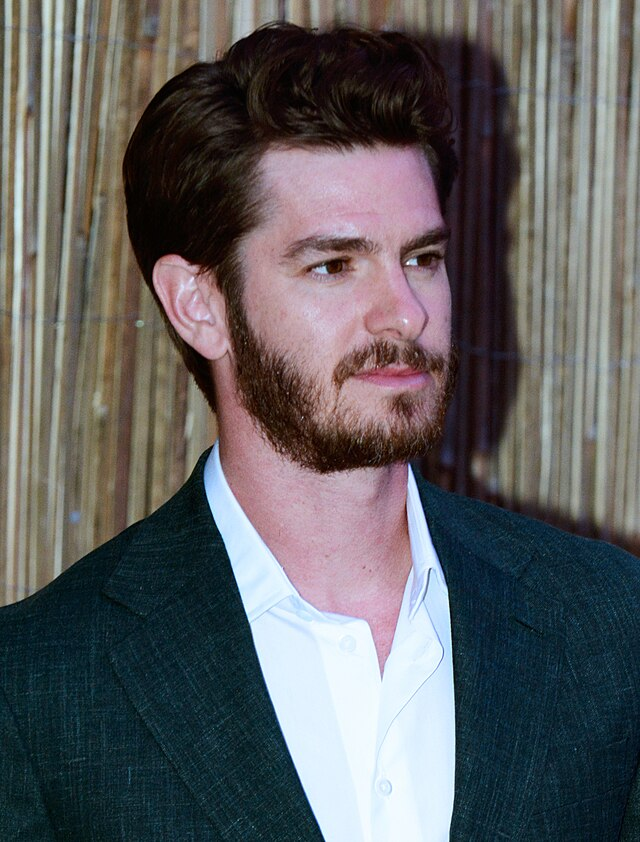

Andrew Garfield
"Andrew Garfield in 2023 (cropped)" by https://www.flickr.com/photos/drlovell/ is licensed under CC BY-SA 2.0 

 .
.
Andrew Russell Garfield was born in Los Angeles, California, to a British mother, Lynn, and American father, Richard Garfield. When he was three, he moved to Surrey, U.K., with his parents and older brother. He is of English and Polish Jewish heritage. Andrew was raised in a middle class family, and attended a private school, the City of London Freemen's School. He began acting in youth theatre productions while he was still at school. At age 19, he went to the Royal Central School of Speech and Drama.
- Age: 41
- Born: Los Angeles, CA